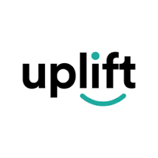
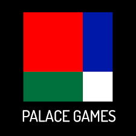

work experience

Uplift
June 2022 - September 2023, FULL-TIME; (acquired by Upgrade Inc. in July, 2023)
- Implementation of machine learning XGBoost features used for loan underwriting
- Developed internal tooling to manage >200 vendor-specific configurations. Worked on frontend and backend service that also communicated directly with other internal services
- Designed, implemented, and deployed core backend service to manage authentication, authorization, and store all customer information. Scaled system to handle >1.2 million requests a day and store >7 million entries of customer information

Palace Games
(July 2016 - June 2022, PART-TIME)
- Implemented data warehouse for analytics
- Researched and implemented/adapted open source pub/sub communication framework central to Palace Games architecture
- Developed internal tooling for management of Palace Games infrastructure, live game monitoring and developer debugging
- Implemented core systems in game architecture, such as gateway between Unity and Python Banyan, multi-input management for 8 input devices
- Configured and managed Palace Games infrastructure: such as data warehousing, on-premise network with DNS & VPN servers, and management of hundreds of Raspberry Pi servers running live games